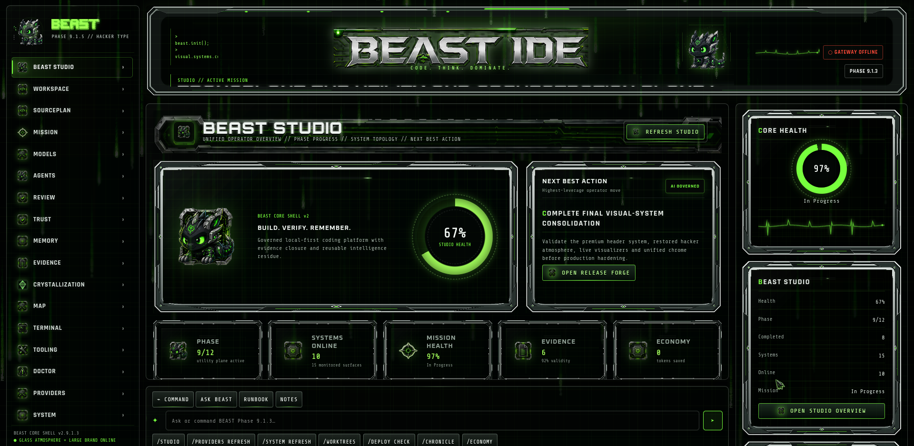
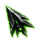
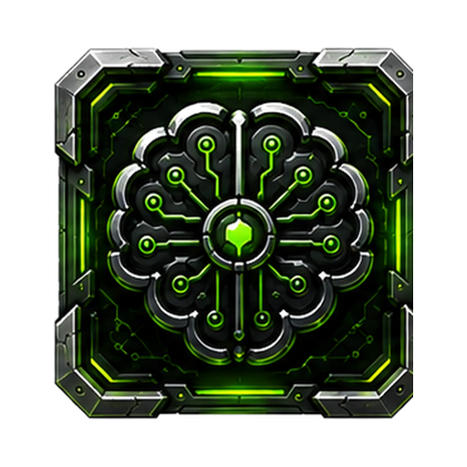
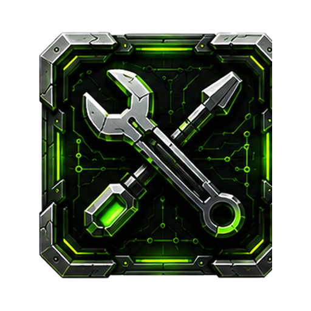
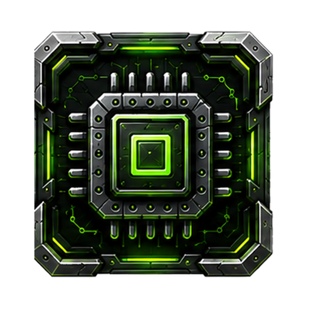

BEAST // ACTIVE MISSION
Governed agentic execution
LIVE UI

Local-first governed inference · proof before power
A control plane for AI coding agents.
BEAST prepares agent work before it begins: scope the mission, compress repository context, route the right model, gate the tools, capture evidence and turn verified residue into reusable local capability.
BEAST://STUDIO-CAPTURE
Actual governed coding surface
PHASE 9.1.5


select route lock sealEngine
Every agent run gets a mission, a route and a receipt.
BEAST sits between the developer, the repository, model providers and execution tools. It does not replace the IDE. It gives agentic coding the missing governance surface.
Mission framing
Convert vague requests into bounded objectives with scope, success criteria, risk level and evidence expectations.

Context compression
Compress files, symbols, retrieval hits and stale paths into the smallest reliable operating context.
Provider cascade
Prefer local and cached lanes, then escalate only when uncertainty, risk or reasoning depth justifies spend.

Tool governance
Gate commands, file mutations and external calls so AI work remains visible, constrained and reviewable.
Crystallization
Turn verified inference residue into reusable capability instead of paying to rediscover the same answer.
Inference Economy Inversion
Stop buying the same uncertainty twice.
A model call should not vanish after it answers. BEAST treats inference as a governed intervention whose verified residue can be fingerprinted, stored and reused.
localcacheragtoolscloudproof
Proof chambers
Failure modes become visible before they become hidden cost.
Public proof summaries are bounded by design. They show what was tested, what passed and what the system surfaced without exposing private prompts, credentials or raw operational traces.
Provider chaos made measurable
250/250Completion matrix with 241 provider rescues surfaced as explicit evidence rather than invisible friction.
Runtime validation
PASS20 CSS files and 43 JS files checked, asset references cleaned and duplicate HTML IDs avoided.
Legible atmosphere
PASSBackground motion, grid depth and glass surfaces tuned so the system remains readable under visual load.

Phase 8Utility plane integration
8Providers, System, Deploy, Chronicle, Studio, Worktrees and Compute Economy surfaces unified.
Open validation telemetryphase receipts
Interface
The site now borrows the IDE’s own chrome, not a generic landing-page costume.
Panels, icons, rails, cursor grammar, frame accents and telemetry widgets are drawn from the BEAST visual system so the public site feels like the product it promotes.
LIVE SURFACE
Studio overview
selectable
Architecture
One mission enters. Evidence leaves.
Mission
Define task, risk, outcome and evidence boundary.
Context
Compress repo, files, memory and semantic top-k.
Model route
Choose local, cached, cheap or premium lanes.
Tool gates
Approve mutations, commands and external calls.
Review
Run tests, syntax, diffs, rubric and human gate.
Crystal
Save verified residue for reuse.
Launch
Try BEAST as the control plane for governed agentic coding.
Built for developers and teams who want AI coding agents to work with mission discipline, constrained tool use, transparent routing and reviewable evidence after the run.